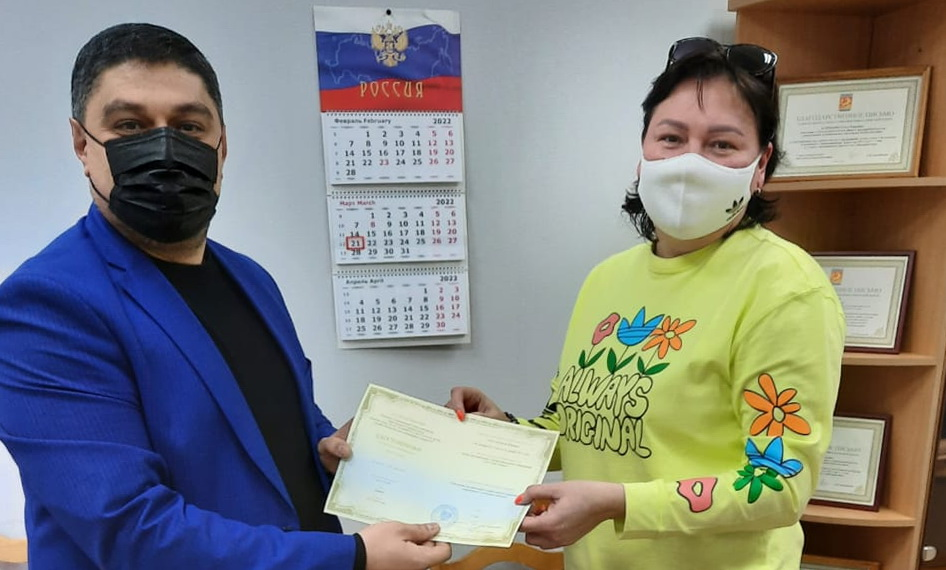
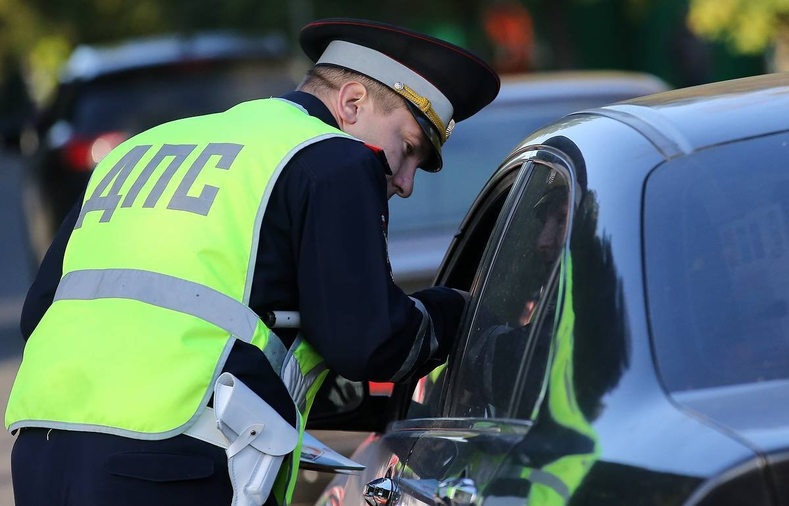
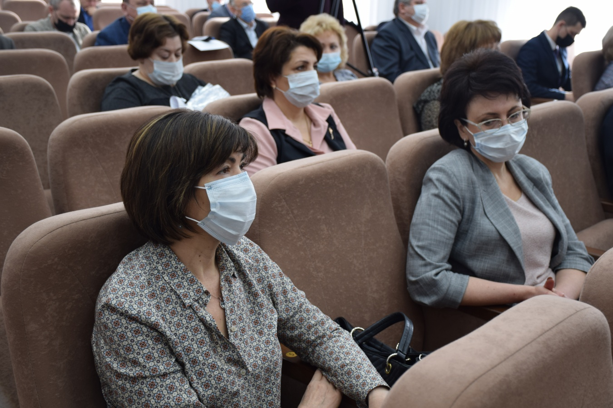
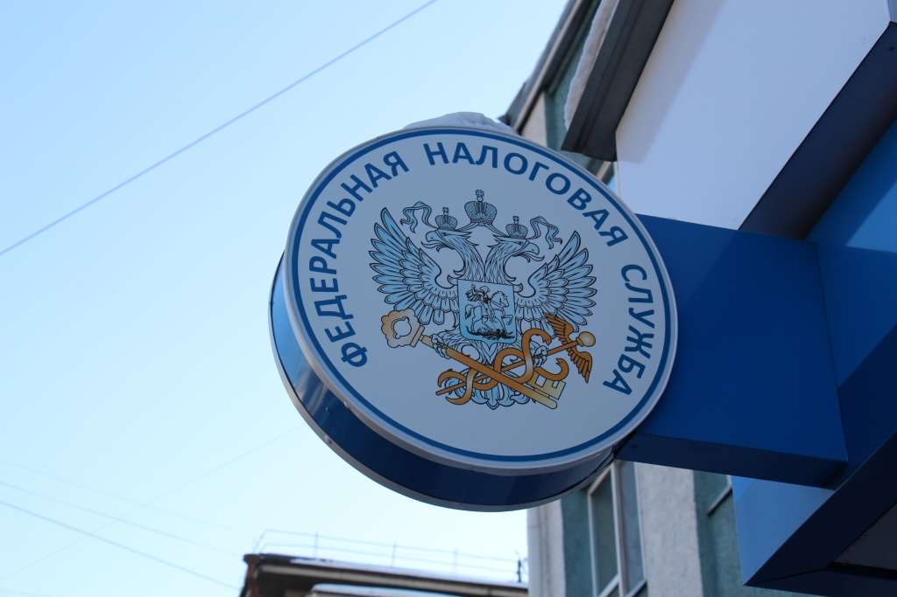
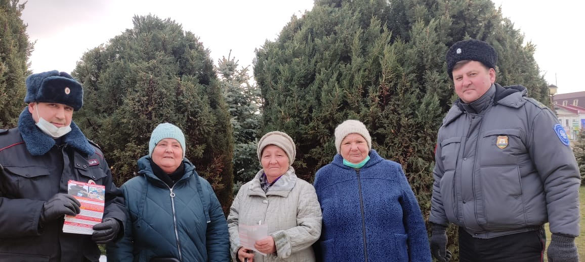
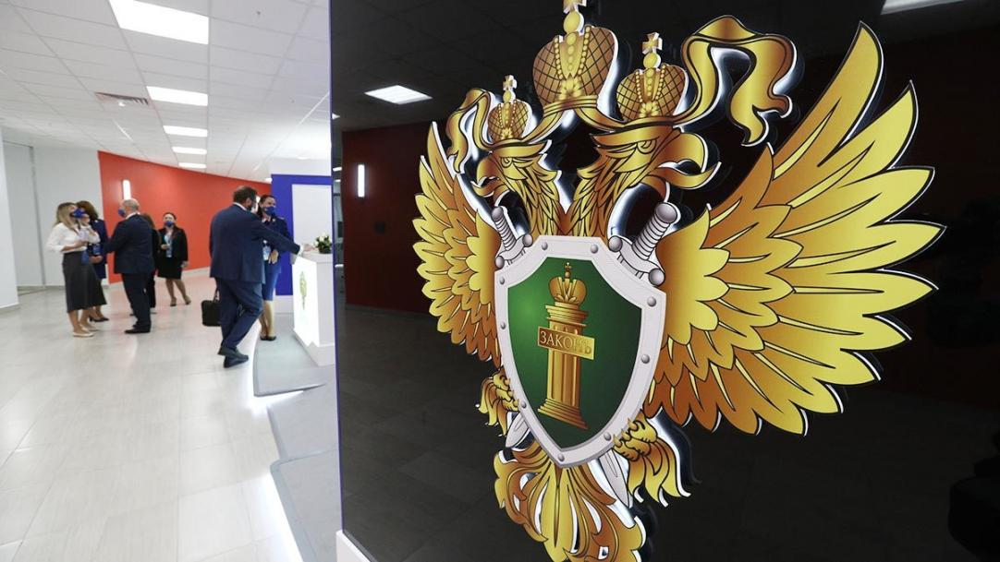

Новости

Каневчанка прошла обучение по повышению квалификации в
области санаторно-курортного комплекса
Министерством курортов, туризма и олимпийского наследия
Краснодарского края проведено обучение по повышению
квалификации кадров санаторно-курортного и гостиничного
комплекса Краснодарского края.
22 марта 2022

В Каневском районе отправлена на скамью подсудимых
автоледи, лишенная права управления транспортными
средствами
43-летняя местная жительница ранее привлекалась к
административной ответственности за невыполнение
требования о прохождении медицинского освидетельствования
на состояние опьянения.
21 марта 2022

С награждения началось очередное расширенное планерное
совещание в администрации района
Грамоту военного комиссара Краснодарского края вручили
начальнику военно-учетного стола Каневского сельского
поселения Николаю Якименко.
22 марта 2022

Сформировать платежный документ на уплату всех видов
пошлин теперь можно с помощью электронного сервиса
Сервис максимально автоматизирован и оснащен подсказками.
21 марта 2022

В Каневском районе полицейские продолжают проводить
профилактическую акцию «Скажи мошенникам НЕТ!»
Стражи порядка рассказали гражданам об основных видах
мошенничества в Интернете.
21 марта 2022
Госавтоинспекция Каневского района напоминает о
недопущении коррупционных преступлений
Взяткой считается любой предмет, предлагаемый должностному
лицу в обмен на бездействие или совершение определенных
действий.
21 марта 2022
Новости в сфере градостроительства

О получении услуг в сфере строительства в электронном виде
Управление строительства администрации муниципального
образования Каневской район сообщает, что на Едином
портале государственных и муниципальных услуг
(gosuslugi.ru) или Региональном портале государственных и
муниципальных услуг (pgu.krasnodar.ru) можно получить в
электронном виде следующие услуги:
22 марта 2022

Порядок уведомления о планируемом строительстве жилого и
садового домов на территории Каневского района
С 4 августа 2018 года получение разрешение на
строительство индивидуального жилого дома больше не
требуется. Вместо этого Градостроительным кодексом
Российской Федерации предусматривается уведомительный
характер о начале и, соответственно, об окончании
строительства объекта индивидуального жилищного
строительства или садового дома на земельном участке для
ведения садоводства.
21 марта 2022

Правила установления санитарно-защитных зон и
использования земельных участков, расположенных в границах
санитарно-защитных зон.
Управление строительства администрации муниципального
образования Каневской район информирует, что
постановлением Правительства Российской Федерации от 3
марта 2018 года № 222 «Об утверждении Правил установления
санитарно-защитных зон и использования земельных участков,
расположенных в границах санитарно-защитных зон»
утверждены Правила установления санитарно - защитных зон и
использования земельных участков, расположенных в границах
санитарно - защитных зон.
22 марта 2022

Международная выставка «WorldBuild Krasnodar/YugBuild»
Выставочная компания КраснодарЭКСПО (в составе группы
компаний ITE) при поддержке администрации Краснодарского
края с 27 февраля по 2 марта 2018 года в городе Краснодаре
в выставочно-конгрессном комплексе «Экспоград Юг» проводит
Международную выставку строительных и отделочных
материалов, инженерного оборудования и архитектурных
проектов «WorldBuild Krasnodar/YugBuild».
21 марта 2022

Управление строительства информирует
Управление строительства муниципального образования
Каневской район информирует население о возможности
получения информации из информационной системы обеспечения
градостроительной деятельности МО Каневской район (ИСОГД)
для осуществления градостроительной, инвестиционной и иной
хозяйственной деятельности из разделов:
21 марта 2022

Управление строительства муниципального образования
Каневской район информирует население о возможности
получения информации из информационной системы обеспечения
градостроительной деятельности МО Каневской район (ИСОГД)
для осуществления градостроительно
В совещании приняли участие заместители глав муниципальных
образований Краснодарского края, специалисты органов
архитектуры края, специалисты администраций муниципальных
образований края, ответственные за ведение и наполнение
официальных сайтов.
21 марта 2022
События на местах

Каневская прокуратура в судебном порядке добилась
прекращения права управления транспортными средствами
Прокуратура района провела проверку соблюдения
законодательства о безопасности дорожного движения.
22 марта 2022

В Каневском районе госавтоинспекторы задержали местного
жителя, перевозившего алкоголь без разрешительных
документов
Сотрудники ДПС ОГИБДД Отдела МВД России по Каневскому
району для проверки документов остановили автомобиль марки
ГАЗ-5201.
21 марта 2022

Представитель общественности проверила условия содержания
граждан, подвергнутых административному аресту.
По результату проведения проверки общественники признали
работу сотрудников полиции удовлетворительной.
22 марта 2022

Воспитатель двенадцатого детского сада стала лауреатом
краевого конкурса.
Очный этап «Педагогического дебюта» прошёл в Краснодаре с
15 по 17 марта.
18 марта 2022